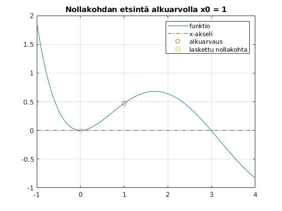
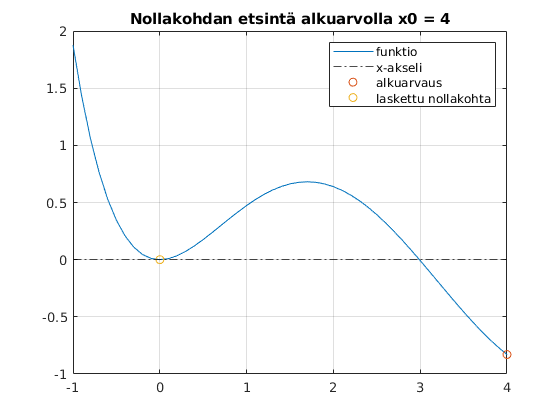
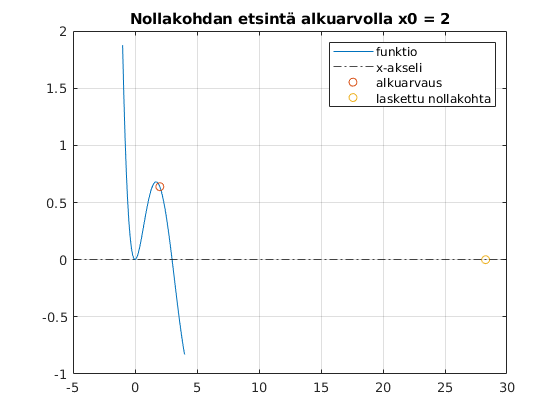

Viikko 12 tehtävät
- Harjoitus 3 perustehtävät
- Arno Törö
Contents
Tehtävä 1
clc;clear;close all f = @(x) -x.*cosh(x)+x.*sinh(x)+sin(x); % funktion määrittely x = -1:.1:4; y = zeros(length(x)); % y:n arvot y=0 suoran piirtämiseen eli x-akseli % derivaatta numeerisesti h = sqrt(eps); df = @(a) (f(a+h)-f(a))/h; % eri aloitusarvoja nollakohdan etsintään % alkuarvo x0 = 1 % funktion ja x-akselin piirto figure(1); plot(x,f(x)); grid on; hold on yline(0,'k-.') x0 = 1; x1 = 0; error = 100; count = 0; plot(x0,f(x0),'o') while error >= 0.001 && count < 100 x1 = x0 - f(x0)/df(x0); error = abs(x1-x0); x0 = x1; count = count + 1; end result1 = x1 plot(result1,0,'o'); title('Nollakohdan etsintä alkuarvolla x0 = 1') legend('funktio','x-akseli','alkuarvaus','laskettu nollakohta') % alkuarvo x0 = 4 figure(2); plot(x,f(x)); grid on; hold on yline(0,'k-.') x0 = 4; x2 = 0; error = 100; count = 0; plot(x0,f(x0),'o') while error >= 0.001 && count < 100 x2 = x0 - f(x0)/df(x0); error = abs(x2-x0); x0 = x2; count = count + 1; end result2 = x2 plot(result1,0,'o'); title('Nollakohdan etsintä alkuarvolla x0 = 4') legend('funktio','x-akseli','alkuarvaus','laskettu nollakohta') % alkuarvo x0 = 2 figure(3); plot(x,f(x)); grid on; hold on yline(0,'k-.') x0 = 2; x3 = 0; error = 100; count = 0; plot(x0,f(x0),'o') while error >= 0.001 && count < 100 x3 = x0 - f(x0)/df(x0); error = abs(x3-x0); x0 = x3; count = count + 1; end result3 = x3 plot(result3,0,'o'); title('Nollakohdan etsintä alkuarvolla x0 = 2') legend('funktio','x-akseli','alkuarvaus','laskettu nollakohta')
result1 =
8.8672e-04
result2 =
2.9907
result3 =
28.2743
   x0 = 2 alkuarvolla nollakohta siirtyy välin ulkopuolelle. Eri alkuarvauksilla voidaan päätyä kauas lähimmästä nollakohdasta, jos jokin iteraatio päätyy funktiossa olevan kukkulan huipulle jolloin derivaatan arvo lähenee nollaa ja tangentti loivenee. Tangentin nollakohta ja seuraava iteraatio näin siirtyy kauemmas arvauksesta.
Tehtävä 1b
Silmämääräisesti kokeilemalla kaikki alkuarvot väillä [-1, 1.69] johtavat kohdassa x = 0 nollakohdan löytämiseen.
nollavali = abs(-1-1.69);
kokovali = abs(-1-4);
todnk = (nollavali/kokovali)*100
% todennäköisyys löytää x = 0 nollakohta, kun alkuarvaus ammutaan satunnaisesti välille.
todnk = 53.8000
Tehtävä 2
clc;clear;close all f1 = @(x) abs((2 + x + cos(x))./(x.^2 + 0.1*x +3)); f2 = @(x) (2 + x + cos(x))./(x.^2 + 0.1*x + 3); a = -1; % raja-arvo fun = @(x) f1(x).*(x<=a) + f2(x).*(x>a); x = -5:0.1:5; x0 = -5:5; [minimikohta, minimiarvo] = fminsearch(@(x) fun(x), 0) % minimikohta ja -arvo aloituskohdasta x0 [maksimikohta, neg_maksimiarvo] = fminsearch(@(x) -fun(x), 0) % maksimikohta saadaan minimoimalla vastakkaissuuntaisesta funktiosta eli % g(x) = -f(x). maksimiarvo = -(neg_maksimiarvo)
minimikohta =
-1.7863
minimiarvo =
6.7588e-06
maksimikohta =
0.2915
neg_maksimiarvo =
-1.0434
maksimiarvo =
1.0434